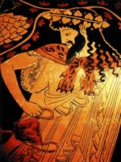

Діоніс, (римське Вакх, Бахус) в грецькій міфології вічно юний бог плодоносних сил землі, рослинності, виноградарства і виноробства, відомий як "бог з бичачими рогами", оскільки любив приймати вид цього могутнього тваринного, син Зевса і фиванской царівни Семел. Зевс, що з'явився перед царівною в сяйві блискавок, ненавмисно спопелив свою смертну кохану, але встиг вихопити з полум'я недоношеної Діоніса і зашив його собі в стегно. У визначений термін бог народив дитину і віддав на виховання німфам. Змужнівши, Діоніс, мандруючи по свічку, зустрів покинуту Тесеем Аріадну і одружився на пий.
Діоніс славився як бог, який звільняє людей від турбот і знімає пута розміреного побуту, тому хід Діоніса носило екстатичний характер; в ньому брали участь сатири, вакханки і менади. Підперезані зміями, вони все трощили на своєму шляху і славили Діоніса, впиваючись кров'ю розтерзаних ними диких тварин і захоплюючи за собою натовпи тріумфуючих людей. Пенфей, цар Фів, намагався ув'язнити в темницю зухвалого бога, але Діоніс покарав Пенфея: менади за його наказом в люті розірвали царя Фів на шматки.
Дослідники схильні вважати, що культ Діоніса мав східне походження. У Греції він набув поширення набагато пізніше, ніж інші боги, і утвердився там з великими труднощами. Незважаючи на те що ім'я Діоніса можна зустріти ще на табличках критського лінійного письма, що відноситься приблизно до XIV століття до нашої ери, популяризація його культу доводиться на VII-VIII століття нашої ери. Саме в цей період культ Діоніса став витісняти культи інших богів і героїв.
У число дванадцяти олімпійських богів Діоніс увійшов набагато пізніше. У Дельфах він став шануватися поряд з Аполлоном. В Аттиці йому були присвячені спеціальні свята - дионисии, які включали в себе змагання поетів, урочисті процесії на честь бога і т. Д., А також Льонею, під час яких показувалися і виконувалися нові комічні твори. У період еллінізму культ Діоніса злився з культом фрігійського бога Сабазія, і бог отримав своє постійне прізвисько - Сабазія. У Стародавньому Римі Діоніс шанувався під іменем Вакха (Бахуса).